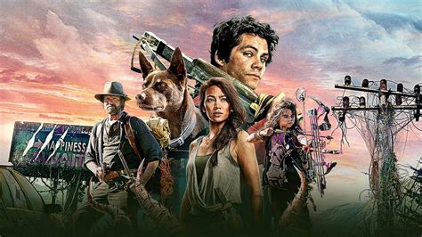

About The Film
In a monster-infested world, Joel learns his girlfriend is just 85 miles away. To make the dangerous journey, Joel discovers his inner hero to be with the girl of his dreams.

Our Heros
Meet the characters
- Joel and Boy
- Aimee
- Clyde and Minnow
- The Survivors
The Monsters
While the origin for the monsters is a bit far-fetched, they serve an important role in the film.
- The Big Ant
- The Big Toad
- The Slasher Queen
- The Giant Crab